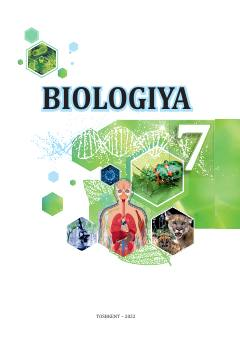

B77-sinf o'quvchilari uchun mo'ljallangan biologiya fanidan darslik.
Mazkur darslik umumta'lim maktablarining 7-sinf o'quvchilari uchun mo'ljallangan bo'lib, tirik organizmlarning xilmaxilligi, hujayra tuzilishi va organlar sistemalarini o'rgatadi. Kitobda o'simliklar, hayvonlar va bakteriyalar olami haqida batafsil ma'lumotlar, shuningdek amaliy hamda laboratoriya mashg'ulotlari berilgan.